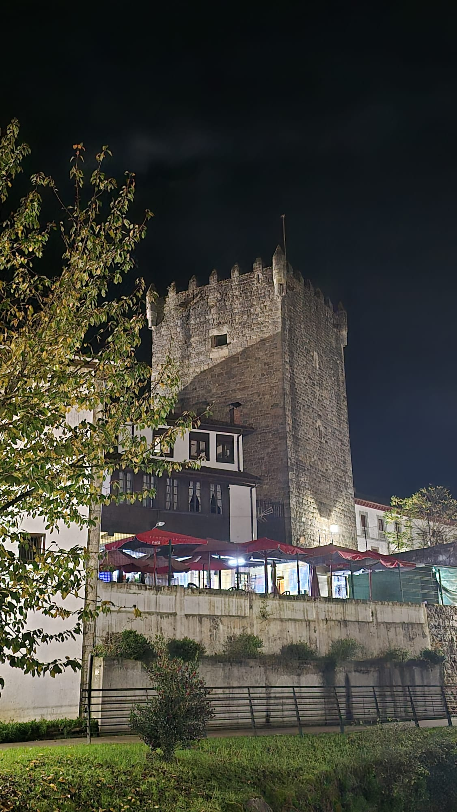
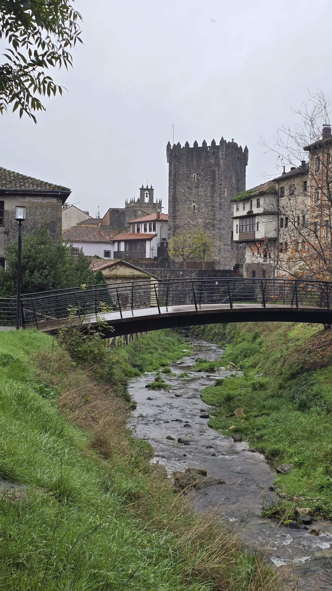
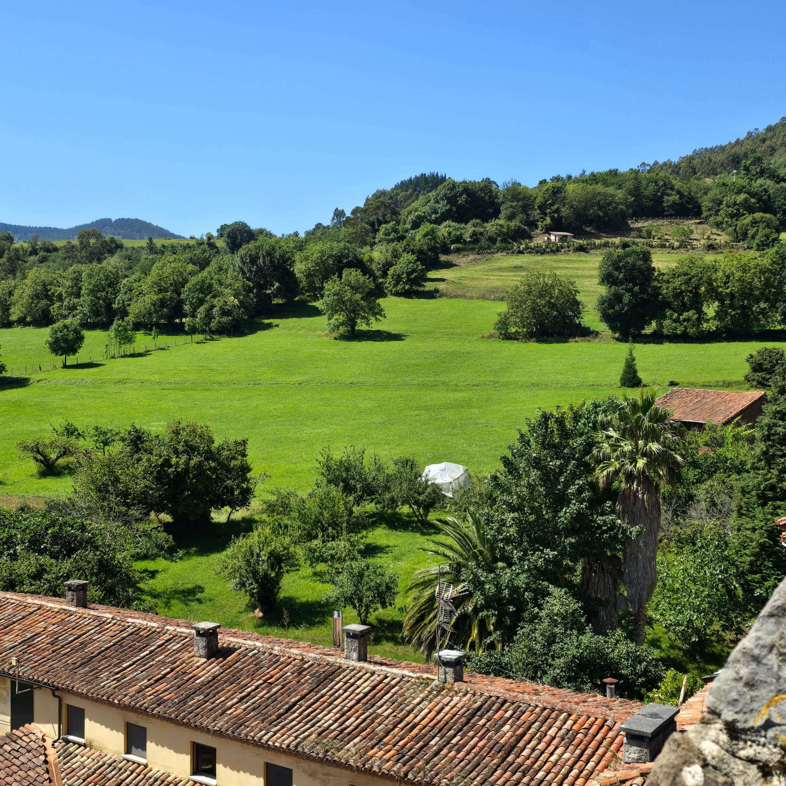
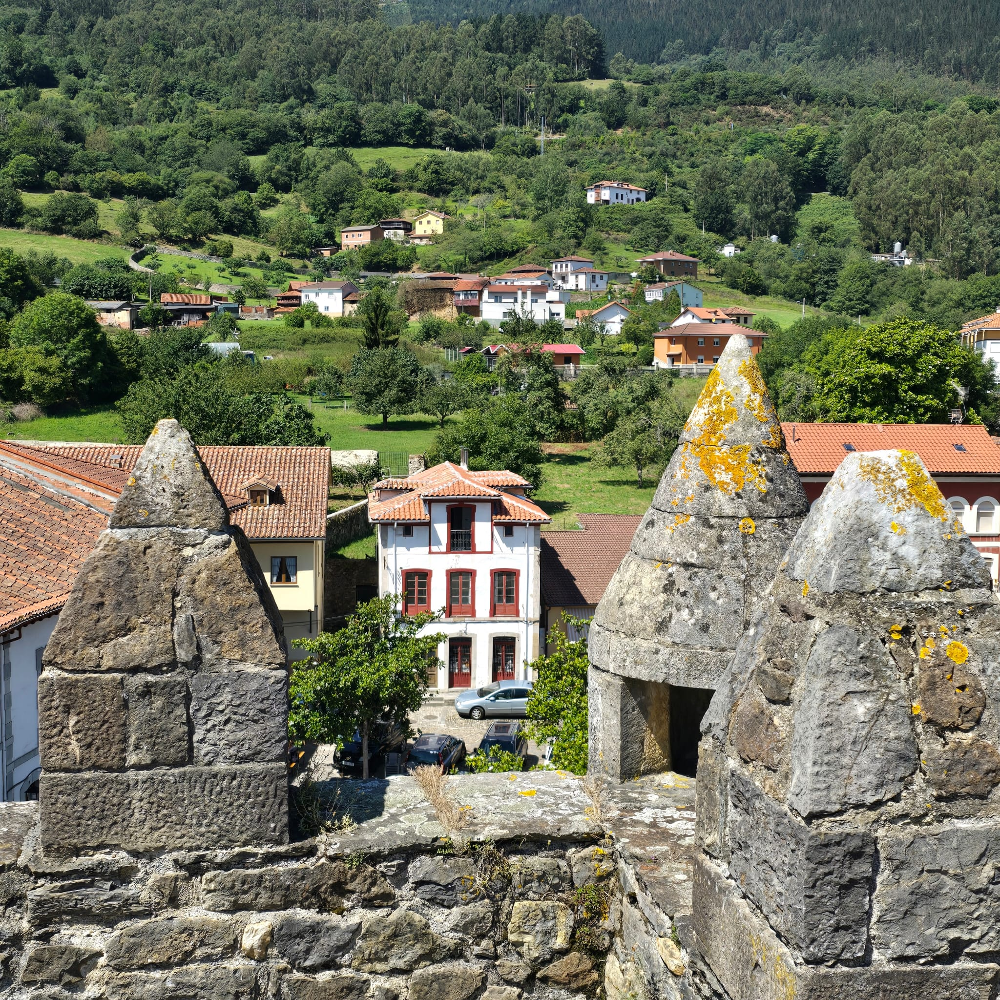
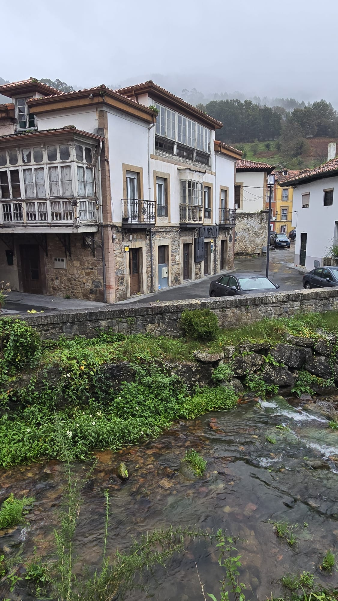
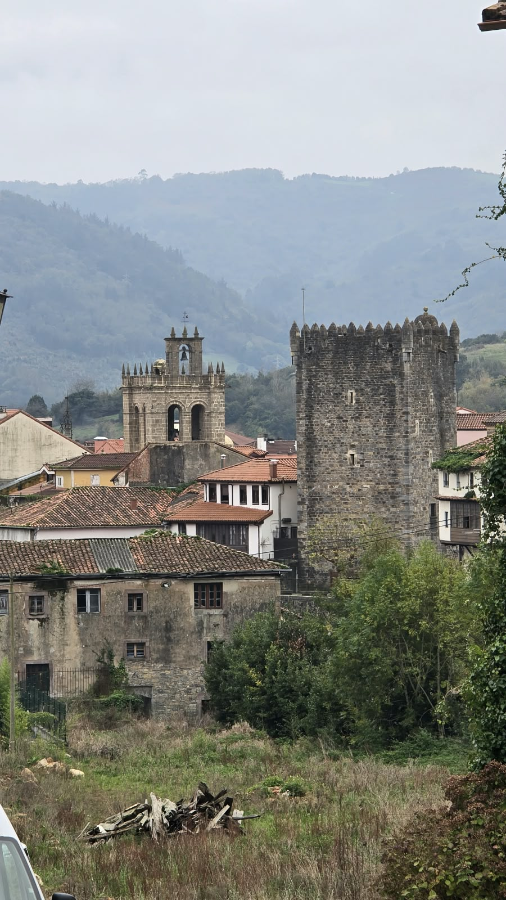

Salas · Asturias · Spain
Work from the original way. A coliving space in a medieval Asturian village, on the oldest route of the Camino de Santiago.
Eight private houses, fast fibre internet, and the kind of quiet that makes deep work possible — in the heart of Salas, a village that has not changed in centuries. The Camino Primitivo passes through the plaza. The mountains begin at the edge of town.
Dedicated desk in every house. Fibre broadband throughout. No coworking theatre — just reliable connectivity and genuine quiet in a stone village that existed long before the internet.
Monthly stays, all-in pricing. Asturian markets, cider houses, local bakeries. A cost of living that has not yet been discovered — and a pace of life that most of Europe has already forgotten.
The Camino Primitivo — the original pilgrimage, founded in the 9th century by Alfonso II — runs through the town. The Asturian coast is 45 minutes away. The Picos de Europa, one hour.
One monthly rate. Everything below is included — no extras, no surprises.
Your own front door. Full privacy — not a room in a shared building, but a self-contained house in the village.
Fast symmetric fibre throughout. Reliable enough for video calls, large uploads, and anything a full workday demands.
A proper work setup in every house — not a kitchen table. Designed for a full day of focused work.
Cook at home or walk to the market. Each house has a full kitchen — Asturian ingredients, local shops two minutes away.
Fresh linen and a weekly clean included. Arrive and focus on work — the domestic logistics are handled.
Every morning, shared breakfast with the other residents. The simplest and most effective community ritual — it costs nothing to skip, and everything to miss.
A shared space for evenings, informal coworking, and the kind of conversations that happen when eight people from different places end up in the same room.
Electricity, water, heating, internet — all included in the monthly rate. One payment, nothing else to manage.





You stay in Salas for a month. You leave. But Salas stays with you — if you want it to. Los Primitivos is the annual membership for those who want a second home in the village, a community that keeps building between stays, and a real stake in what Salas becomes.
Regenerative land, local food systems, sustainable agriculture with Asturian farmers
Builders, developers, makers — open-source projects with a village as the testing ground
Craft, restoration, traditional skills — learning from locals, passing knowledge between generations
Asturian food culture, cider, shared recipes — the table as the original community ritual
Membership opens after your first stay at El Primitivo, or by direct application to the founding circle. The first 50 members set the culture of Los Primitivos — their projects, their values, their connections become the foundation.
We're opening a small waitlist for founding members — remote workers who want to live and work somewhere real. Leave your email and we'll be in touch when bookings open.
No spam. We'll write once, when we're ready.